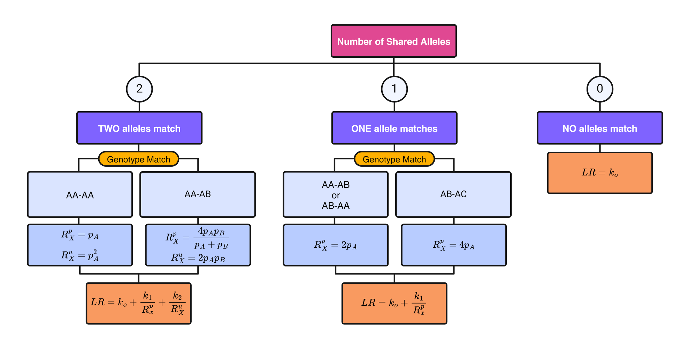
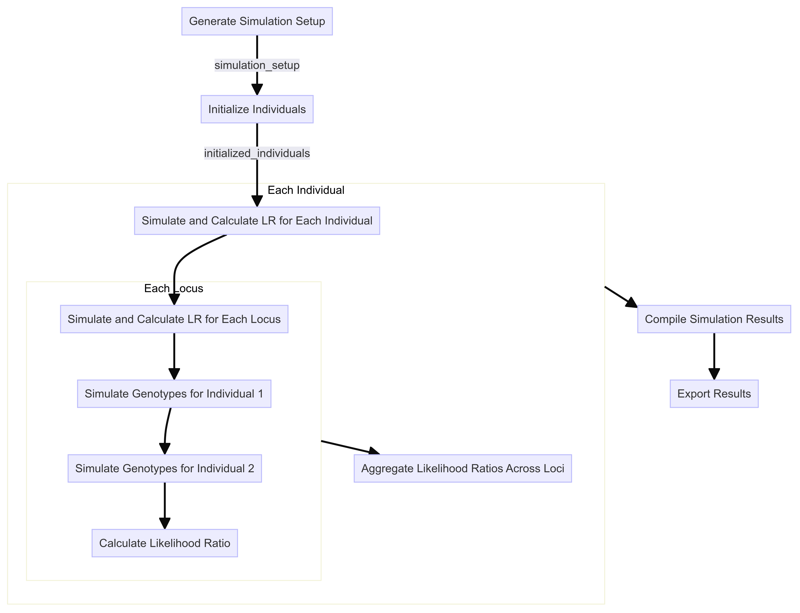
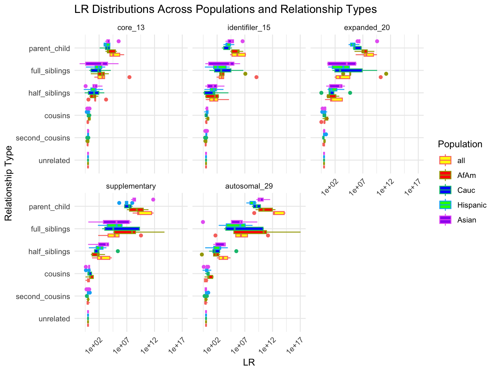
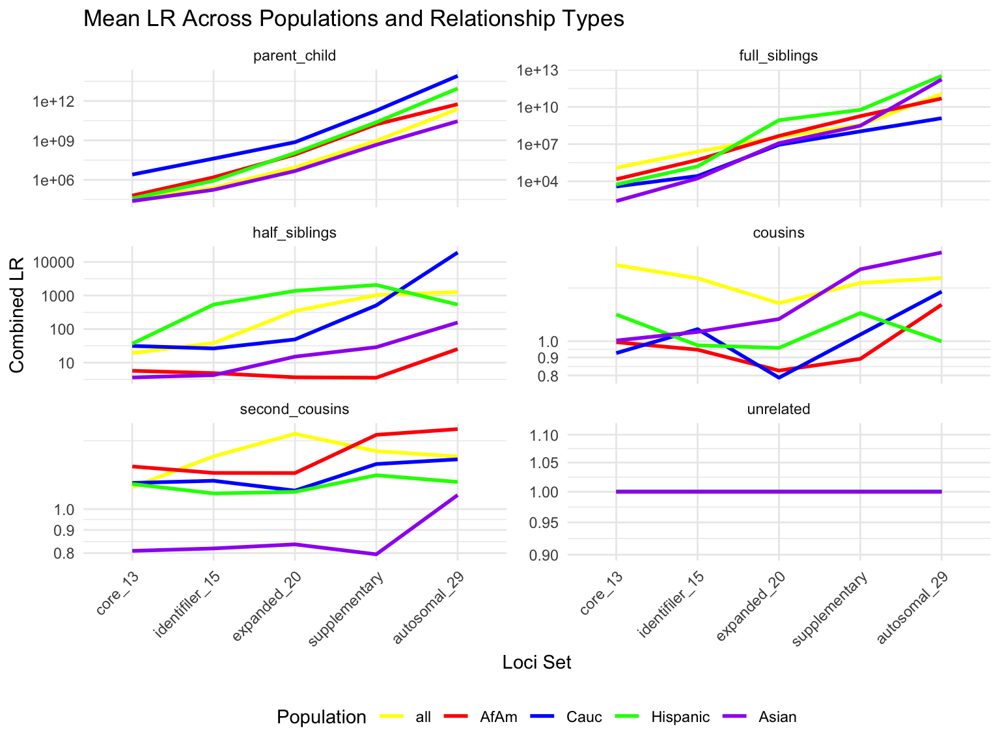
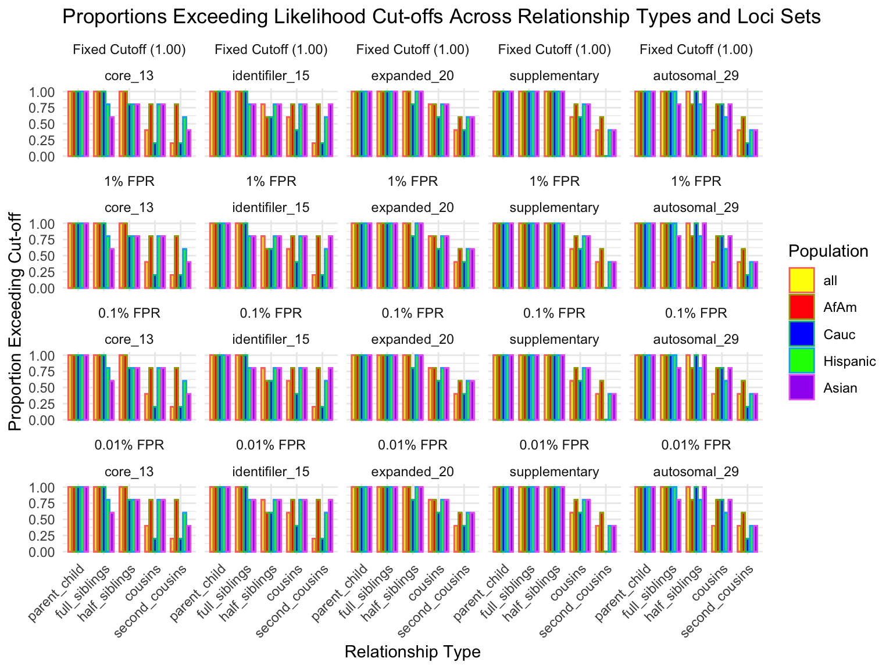
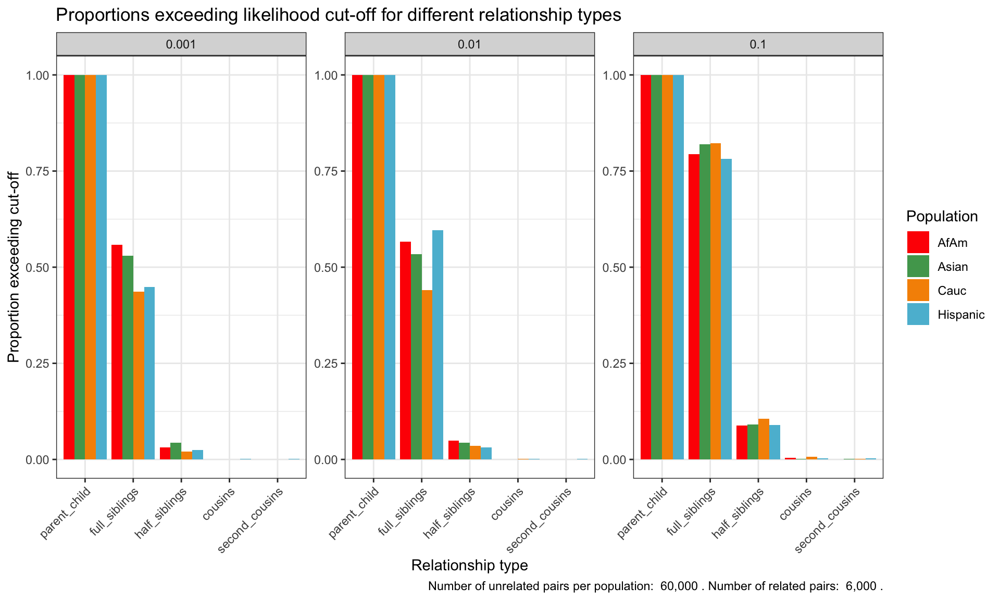
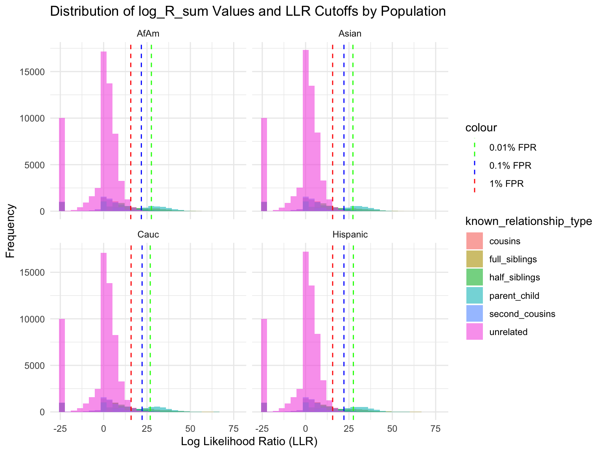

Simulation of STR Pairs and Calculation of Likelihood Ratios
Tina Lasisi
2025-02-08 19:24:32
Last updated: 2025-02-08
Checks: 6 1
Knit directory: PODFRIDGE/
This reproducible R Markdown analysis was created with workflowr (version 1.7.1). The Checks tab describes the reproducibility checks that were applied when the results were created. The Past versions tab lists the development history.
The R Markdown file has unstaged changes. To know which version of
the R Markdown file created these results, you’ll want to first commit
it to the Git repo. If you’re still working on the analysis, you can
ignore this warning. When you’re finished, you can run
wflow_publish to commit the R Markdown file and build the
HTML.
Great job! The global environment was empty. Objects defined in the global environment can affect the analysis in your R Markdown file in unknown ways. For reproduciblity it’s best to always run the code in an empty environment.
The command set.seed(20230302) was run prior to running
the code in the R Markdown file. Setting a seed ensures that any results
that rely on randomness, e.g. subsampling or permutations, are
reproducible.
Great job! Recording the operating system, R version, and package versions is critical for reproducibility.
Nice! There were no cached chunks for this analysis, so you can be confident that you successfully produced the results during this run.
Great job! Using relative paths to the files within your workflowr project makes it easier to run your code on other machines.
Great! You are using Git for version control. Tracking code development and connecting the code version to the results is critical for reproducibility.
The results in this page were generated with repository version 669998c. See the Past versions tab to see a history of the changes made to the R Markdown and HTML files.
Note that you need to be careful to ensure that all relevant files for
the analysis have been committed to Git prior to generating the results
(you can use wflow_publish or
wflow_git_commit). workflowr only checks the R Markdown
file, but you know if there are other scripts or data files that it
depends on. Below is the status of the Git repository when the results
were generated:
Ignored files:
Ignored: .DS_Store
Ignored: .Rhistory
Ignored: .Rproj.user/
Ignored: data/.DS_Store
Ignored: data/sims/.DS_Store
Ignored: output/.DS_Store
Ignored: output/simulation_20240726-155743/.DS_Store
Ignored: output/simulation_20240726-162034_11228488/.DS_Store
Ignored: output/simulation_20240726-163235_11228791/.DS_Store
Unstaged changes:
Modified: PODFRIDGE.Rproj
Modified: analysis/STR-simulation.Rmd
Modified: analysis/index.Rmd
Note that any generated files, e.g. HTML, png, CSS, etc., are not included in this status report because it is ok for generated content to have uncommitted changes.
These are the previous versions of the repository in which changes were
made to the R Markdown (analysis/STR-simulation.Rmd) and
HTML (docs/STR-simulation.html) files. If you’ve configured
a remote Git repository (see ?wflow_git_remote), click on
the hyperlinks in the table below to view the files as they were in that
past version.
| File | Version | Author | Date | Message |
|---|---|---|---|---|
| html | f143ee1 | tinalasisi | 2024-09-16 | Revised website |
| html | b98be97 | linmatch | 2024-08-30 | update color figure 1,2 |
| Rmd | 36cbb65 | Tina Lasisi | 2024-07-25 | Updated simulation scripts |
| Rmd | e20d18e | tinalasisi | 2024-07-25 | Adding numbers and fixing figures |
| Rmd | d15870a | Tina Lasisi | 2024-07-24 | Setting up cluster instructions. |
| Rmd | 2672740 | Tina Lasisi | 2024-07-24 | Benchmarked dplyr and datatable versions of simulation |
| Rmd | 59a752d | tinalasisi | 2024-07-24 | Fixing simulation |
| Rmd | 68137c0 | tinalasisi | 2024-07-23 | Benchmarking simulation script components |
| Rmd | fbdfcf1 | Tina Lasisi | 2024-07-23 | Fixed allele frequency table and continued simulation development |
| html | fbdfcf1 | Tina Lasisi | 2024-07-23 | Fixed allele frequency table and continued simulation development |
| Rmd | e1eec3c | Tina Lasisi | 2024-07-22 | Updating the STR-simulation |
| Rmd | b5e4ed4 | Tina Lasisi | 2024-07-19 | Updated simulation components + added to data folder |
| html | b5e4ed4 | Tina Lasisi | 2024-07-19 | Updated simulation components + added to data folder |
| Rmd | 635de08 | Tina Lasisi | 2024-07-18 | Updating html for sibling analysis and STR simulations |
| html | 635de08 | Tina Lasisi | 2024-07-18 | Updating html for sibling analysis and STR simulations |
| Rmd | c57a79a | Tina Lasisi | 2024-07-10 | Updated STR-simulation.Rmd |
| html | c57a79a | Tina Lasisi | 2024-07-10 | Updated STR-simulation.Rmd |
| Rmd | f80f86e | tinalasisi | 2024-07-10 | Updated STR-simulation.Rmd |
| html | f80f86e | tinalasisi | 2024-07-10 | Updated STR-simulation.Rmd |
| Rmd | 11fb32c | Tina Lasisi | 2024-03-10 | write CSVs with output data |
| html | cf281b6 | Tina Lasisi | 2024-03-03 | Build site. |
| Rmd | 2596546 | Tina Lasisi | 2024-03-03 | wflow_publish("analysis/*", republish = TRUE, all = TRUE, verbose = TRUE) |
Background
We will simulate pairs of individuals with known relationships (e.g., parent-child, siblings), including unrelated individuals, based on the specified parameters. We will then calculate the likelihood ratio for each pair of individuals based on the simulated genotypes and known relationships.
To do this, we will draw the likelihood ratio caluclations from Balding & Steele’s ‘Weight-of-evidence for forensic DNA profiles’ book.
From Weight-of-evidence for forensic DNA profiles book
Likelihood ratio for a single locus is:
\[ R=\kappa_0+\kappa_1 / R_X^p+\kappa_2 / R_X^u \] Where \(\kappa\) is the probability of having 0, 1 or 2 alleles IBD for a given relationship.
The \(R_X\) terms are quantifying the “surprisingness” of a particular pattern of allele sharing.
The \(R_X^p\) terms attached to the \(kappa_1\) are defined in the following table:
\[ \begin{aligned} &\text { Table 7.2 Single-locus LRs for paternity when } \mathcal{C}_M \text { is unavailable. }\\ &\begin{array}{llc} \hline c & Q & R_X \times\left(1+2 F_{S T}\right) \\ \hline \mathrm{AA} & \mathrm{AA} & 3 F_{S T}+\left(1-F_{S T}\right) p_A \\ \mathrm{AA} & \mathrm{AB} & 2\left(2 F_{S T}+\left(1-F_{S T}\right) p_A\right) \\ \mathrm{AB} & \mathrm{AA} & 2\left(2 F_{S T}+\left(1-F_{S T}\right) p_A\right) \\ \mathrm{AB} & \mathrm{AC} & 4\left(F_{S T}+\left(1-F_{S T}\right) p_A\right) \\ \mathrm{AB} & \mathrm{AB} & 4\left(F_{S T}+\left(1-F_{S T}\right) p_A\right)\left(F_{S T}+\left(1-F_{S T}\right) p_B\right) /\left(2 F_{S T}+\left(1-F_{S T}\right)\left(p_A+p_B\right)\right) \\ \hline \end{array} \end{aligned} \]
For our purposes we will take out the \(F_{S T}\) values. So the table will be as follows:
\[ \begin{aligned} &\begin{array}{llc} \hline c & Q & R_X \\ \hline \mathrm{AA} & \mathrm{AA} & p_A \\ \mathrm{AA} & \mathrm{AB} & 2 p_A \\ \mathrm{AB} & \mathrm{AA} & 2p_A \\ \mathrm{AB} & \mathrm{AC} & 4p_A \\ \mathrm{AB} & \mathrm{AB} & 4 p_A p_B/(p_A+p_B) \\ \hline \end{array} \end{aligned} \]
If none of the alleles match, then the \(\kappa_1 / R_X^p = 0\).
The \(R_X^u\) terms attached to the \(kappa_2\) are defined as:
If both alleles match and are homozygous the equation is 6.4 (pg 85). Single locus match probability: \(\mathrm{CSP}=\mathcal{G}_Q=\mathrm{AA}\) \[ \frac{\left(2 F_{S T}+\left(1-F_{S T}\right) p_A\right)\left(3 F_{S T}+\left(1-F_{S T}\right) p_A\right)}{\left(1+F_{S T}\right)\left(1+2 F_{S T}\right)} \] Simplified to: \[ p_A{ }^2 \]
If both alleles match and are heterozygous, the equation is 6.5 (pg 85) Single locus match probability: \(\mathrm{CSP}=\mathcal{G}_Q=\mathrm{AB}\) \[ 2 \frac{\left(F_{S T}+\left(1-F_{S T}\right) p_A\right)\left(F_{S T}+\left(1-F_{S T}\right) p_B\right)}{\left(1+F_{S T}\right)\left(1+2 F_{S T}\right)} \] Simplified to:
\[ 2 p_A p_B \] If both alleles do not match then \(\kappa_2 / R_X^u = 0\).
Likelihood ratio calculation
Flowchart
For our purposes, we can describe the flowchart for the likelihood ratio calculation as follows:

Function
calculate_likelihood_ratio <- function(shared_alleles, genotype_match = NULL, pA = NULL, pB = NULL, k0, k1, k2) {
# Case 0: No Shared Alleles
if (shared_alleles == 0) {
LR <- k0
return(LR)
}
# Case 1: One Shared Allele
if (shared_alleles == 1) {
if (genotype_match == "AA-AA") {
Rxp <- pA
} else if (genotype_match == "AA-AB" | genotype_match == "AB-AA") {
Rxp <- 2 * pA
} else if (genotype_match == "AB-AC") {
Rxp <- 4 * pA
} else if (genotype_match == "AB-AB") {
Rxp <- (4 * (pA * pB) )/ (pA + pB)
} else {
stop("Invalid genotype match for 1 shared allele.")
}
LR <- k0 + (k1 / Rxp)
return(LR)
}
# Case 2: Two Shared Alleles
if (shared_alleles == 2) {
if (genotype_match == "AA-AA") {
Rxp <- pA
Rxu <- pA^2
} else if (genotype_match == "AB-AB") {
Rxp <- (4 * pA * pB) / (pA + pB)
Rxu <- 2 * pA * pB
} else {
stop("Invalid genotype match for 2 shared alleles.")
}
LR <- k0 + (k1 / Rxp) + (k2 / Rxu)
return(LR)
}
}Rscript for simulation
Given our likelihood ratio calculation, we will now build a framework around this for simulating pairs of individuals of known relationships and calculating the likelihood ratio for each pair based on the simulated genotypes.
The general flow of our simulation framework will be as follows:

Step 1: Simulation Setup
The first step is to set up the simulation by defining the parameters and functions required for generating the simulated data. This includes specifying the populations, allele frequencies, and the kinship coefficient matrix for likelihood ratio calculations.
generate_simulation_setup <- function(kinship_matrix, population_list, num_related, num_unrelated) {
# Create an empty dataframe to store the simulation setup
simulation_setup <- data.frame(
population = character(),
relationship_type = character(),
num_simulations = integer(),
stringsAsFactors = FALSE
)
# Loop through each population and relationship type to create the setup
for (population in population_list) {
for (relationship in kinship_matrix$relationship_type) {
num_simulations <- ifelse(relationship == "unrelated", num_unrelated, num_related)
# Append to the simulation setup dataframe
simulation_setup <- rbind(simulation_setup, data.frame(
population = population,
relationship_type = relationship,
num_simulations = num_simulations
))
}
}
return(simulation_setup)
}Create input parameters
The necessary parameters for this are initialized beforehand.
First, the kinship coefficients are provided in a matrix:
# Create a dataframe with relationship types and their respective kinship coefficients (k0, k1, k2)
kinship_matrix <- tibble(
relationship_type = factor(
c("parent_child", "full_siblings", "half_siblings", "cousins", "second_cousins", "unrelated"),
levels = c("parent_child", "full_siblings", "half_siblings", "cousins", "second_cousins", "unrelated")
),
k0 = c(0, 1/4, 1/2, 7/8, 15/16, 1),
k1 = c(1, 1/2, 1/2, 1/8, 1/16, 0),
k2 = c(0, 1/4, 0, 0, 0, 0)
)
# Print the kinship matrix to check the contents
print(kinship_matrix)# A tibble: 6 × 4
relationship_type k0 k1 k2
<fct> <dbl> <dbl> <dbl>
1 parent_child 0 1 0
2 full_siblings 0.25 0.5 0.25
3 half_siblings 0.5 0.5 0
4 cousins 0.875 0.125 0
5 second_cousins 0.938 0.0625 0
6 unrelated 1 0 0 Then a list of populations is created:
# A tibble: 5 × 2
population label
<fct> <chr>
1 all All
2 AfAm African American
3 Cauc Caucasian
4 Hispanic Hispanic
5 Asian Asian [1] "all" "AfAm" "Cauc" "Hispanic" "Asian" Gather allele frequency information
Classes 'data.table' and 'data.frame': 14065 obs. of 4 variables:
$ allele : chr "2.2" "2.2" "2.2" "2.2" ...
$ marker : chr "CSF1PO" "D10S1248" "D12S391" "D13S317" ...
$ frequency : num 0 0 0 0 0 0 0 0 0 0 ...
$ population: chr "all" "all" "all" "all" ...
- attr(*, ".internal.selfref")=<externalptr> allele marker frequency population
<char> <char> <num> <char>
1: 2.2 CSF1PO 0 all
2: 2.2 D10S1248 0 all
3: 2.2 D12S391 0 all
4: 2.2 D13S317 0 all
5: 2.2 D16S539 0 all
6: 2.2 D18S51 0 allWe will now extract the unique loci from the allele frequency tables:
[1] "CSF1PO" "D10S1248" "D12S391" "D13S317" "D16S539" "D18S51"
[7] "D19S433" "D1S1656" "D21S11" "D22S1045" "D2S1338" "D2S441"
[13] "D3S1358" "D5S818" "D6S1043" "D7S820" "D8S1179" "F13A01"
[19] "F13B" "FESFPS" "FGA" "LPL" "Penta_C" "Penta_D"
[25] "Penta_E" "SE33" "TH01" "TPOX" "vWA" Number of unique loci: 29 These are the 29 autosomal loci from the 2013 and 2017 FSI paper on US STR allele frequencies for 29 autosomal STR loci Steffen et al 2017.
We will use the list of different required loci to calculate likelihood ratios for pairs of individuals. Below is a reference with which loci are used in various sets.
locus core_13 identifiler_15 expanded_20 supplementary
1 CSF1PO 1 1 1 1
2 FGA 1 1 1 1
3 THO1 1 1 1 1
4 TPOX 1 1 1 1
5 vWA 1 1 1 1
6 D3S1358 1 1 1 1
7 D5S818 1 1 1 1
8 D7S820 1 1 1 1
9 D8S1179 1 1 1 1
10 D13S317 1 1 1 1
11 D16S539 1 1 1 1
12 D18S51 1 1 1 1
13 D21S11 1 1 1 1
14 D1S1656 0 0 1 1
15 D2S441 0 0 1 1
16 D2S1338 0 1 1 1
17 D10S1248 0 0 1 1
18 D12S391 0 0 1 1
19 D19S433 0 1 1 1
20 D22S1045 0 0 1 1
21 SE33 0 0 0 1
22 Penta_E 0 0 0 1
23 Penta_D 0 0 0 1$core_13
[1] "CSF1PO" "FGA" "THO1" "TPOX" "vWA" "D3S1358" "D5S818"
[8] "D7S820" "D8S1179" "D13S317" "D16S539" "D18S51" "D21S11"
$identifiler_15
[1] "CSF1PO" "FGA" "THO1" "TPOX" "vWA" "D3S1358" "D5S818"
[8] "D7S820" "D8S1179" "D13S317" "D16S539" "D18S51" "D21S11" "D2S1338"
[15] "D19S433"
$expanded_20
[1] "CSF1PO" "FGA" "THO1" "TPOX" "vWA" "D3S1358"
[7] "D5S818" "D7S820" "D8S1179" "D13S317" "D16S539" "D18S51"
[13] "D21S11" "D1S1656" "D2S441" "D2S1338" "D10S1248" "D12S391"
[19] "D19S433" "D22S1045"
$supplementary
[1] "CSF1PO" "FGA" "THO1" "TPOX" "vWA" "D3S1358"
[7] "D5S818" "D7S820" "D8S1179" "D13S317" "D16S539" "D18S51"
[13] "D21S11" "D1S1656" "D2S441" "D2S1338" "D10S1248" "D12S391"
[19] "D19S433" "D22S1045" "SE33" "Penta_E" "Penta_D"
$autosomal_29
[1] "CSF1PO" "D10S1248" "D12S391" "D13S317" "D16S539" "D18S51"
[7] "D19S433" "D1S1656" "D21S11" "D22S1045" "D2S1338" "D2S441"
[13] "D3S1358" "D5S818" "D6S1043" "D7S820" "D8S1179" "F13A01"
[19] "F13B" "FESFPS" "FGA" "LPL" "Penta_C" "Penta_D"
[25] "Penta_E" "SE33" "TH01" "TPOX" "vWA" Now we can test the simulation setup function:
population relationship_type num_simulations
1 all parent_child 5
2 all full_siblings 5
3 all half_siblings 5
4 all cousins 5
5 all second_cousins 5
6 all unrelated 10
7 AfAm parent_child 5
8 AfAm full_siblings 5
9 AfAm half_siblings 5
10 AfAm cousins 5
11 AfAm second_cousins 5
12 AfAm unrelated 10
13 Cauc parent_child 5
14 Cauc full_siblings 5
15 Cauc half_siblings 5
16 Cauc cousins 5
17 Cauc second_cousins 5
18 Cauc unrelated 10
19 Hispanic parent_child 5
20 Hispanic full_siblings 5
21 Hispanic half_siblings 5
22 Hispanic cousins 5
23 Hispanic second_cousins 5
24 Hispanic unrelated 10
25 Asian parent_child 5
26 Asian full_siblings 5
27 Asian half_siblings 5
28 Asian cousins 5
29 Asian second_cousins 5
30 Asian unrelated 10Step 2: Initialize Individuals
Once the general simulation setup is done, each pair of individuals must be initialized as its own dataframe.
Now we can initialize the individuals:
Testing the initialization function
Here we test to see what the intialization function creates:
population relationship_type sim_id locus ind1_allele1 ind1_allele2
<char> <char> <num> <char> <char> <char>
1: all parent_child 1 CSF1PO
2: all parent_child 1 D10S1248
3: all parent_child 1 D12S391
4: all parent_child 1 D13S317
5: all parent_child 1 D16S539
6: all parent_child 1 D18S51
7: all parent_child 1 D19S433
8: all parent_child 1 D1S1656
9: all parent_child 1 D21S11
10: all parent_child 1 D22S1045
11: all parent_child 1 D2S1338
12: all parent_child 1 D2S441
13: all parent_child 1 D3S1358
14: all parent_child 1 D5S818
15: all parent_child 1 D6S1043
16: all parent_child 1 D7S820
17: all parent_child 1 D8S1179
18: all parent_child 1 F13A01
19: all parent_child 1 F13B
20: all parent_child 1 FESFPS
21: all parent_child 1 FGA
22: all parent_child 1 LPL
23: all parent_child 1 Penta_C
24: all parent_child 1 Penta_D
25: all parent_child 1 Penta_E
26: all parent_child 1 SE33
27: all parent_child 1 TH01
28: all parent_child 1 TPOX
29: all parent_child 1 vWA
population relationship_type sim_id locus ind1_allele1 ind1_allele2
ind2_allele1 ind2_allele2 shared_alleles genotype_match LR
<char> <char> <int> <char> <num>
1: 0 0
2: 0 0
3: 0 0
4: 0 0
5: 0 0
6: 0 0
7: 0 0
8: 0 0
9: 0 0
10: 0 0
11: 0 0
12: 0 0
13: 0 0
14: 0 0
15: 0 0
16: 0 0
17: 0 0
18: 0 0
19: 0 0
20: 0 0
21: 0 0
22: 0 0
23: 0 0
24: 0 0
25: 0 0
26: 0 0
27: 0 0
28: 0 0
29: 0 0
ind2_allele1 ind2_allele2 shared_alleles genotype_match LRUnit: microseconds
expr min lq mean median uq max neval
initialize 67.117 69.085 100.4115 71.545 75.112 2837.733 100Step 3: Simulate Genotypes
Next, we define a function to simulate the genotypes for each pair of individuals based on the allele frequencies and kinship coefficients.
Unit: microseconds
expr min lq mean median uq max neval
geno_sim 548.99 569.1825 738.8274 593.311 619.633 11311.33 100Step 4: Calculate Kinship
Then we define a related function to calculate the kinship and likelihood ratios based on the simulated genotypes.
Here we test what the simulation will produce for each locus in a pair of individuals.
population relationship_type sim_id locus ind1_allele1 ind1_allele2
<char> <char> <num> <char> <char> <char>
1: all parent_child 1 D21S11 29 30
ind2_allele1 ind2_allele2 shared_alleles genotype_match LR
<char> <char> <int> <char> <num>
1: 30 28 0 0 population relationship_type sim_id locus ind1_allele1 ind1_allele2
<char> <char> <num> <char> <char> <char>
1: all parent_child 1 D21S11 29 30
ind2_allele1 ind2_allele2 shared_alleles genotype_match LR
<char> <char> <int> <char> <num>
1: 30 28 1 AB-AC 1.009747We then need a function to process the loci and calculate the kinship for each row.
An example of the final output is shown below for one complete set of loci for a pair of individuals:
population relationship_type sim_id locus ind1_allele1 ind1_allele2
<char> <char> <num> <char> <char> <char>
1: all parent_child 1 CSF1PO 11 10
2: all parent_child 1 D10S1248 14 14
3: all parent_child 1 D12S391 17.3 17
4: all parent_child 1 D13S317 12 11
5: all parent_child 1 D16S539 9 11
6: all parent_child 1 D18S51 13 20
7: all parent_child 1 D19S433 14 12.2
8: all parent_child 1 D1S1656 14 16
9: all parent_child 1 D21S11 30 30.2
10: all parent_child 1 D22S1045 15 16
11: all parent_child 1 D2S1338 19 21
12: all parent_child 1 D2S441 14 12
13: all parent_child 1 D3S1358 17 14
14: all parent_child 1 D5S818 13 9
15: all parent_child 1 D6S1043 12 12
16: all parent_child 1 D7S820 11 8
17: all parent_child 1 D8S1179 13 14
18: all parent_child 1 F13A01 7 3.2
19: all parent_child 1 F13B 10 10
20: all parent_child 1 FESFPS 10 12
21: all parent_child 1 FGA 21 20
22: all parent_child 1 LPL 12 10
23: all parent_child 1 Penta_C 12 11
24: all parent_child 1 Penta_D 10 11
25: all parent_child 1 Penta_E 12 16
26: all parent_child 1 SE33 16 16
27: all parent_child 1 TH01 9 9
28: all parent_child 1 TPOX 9 11
29: all parent_child 1 vWA 14 14
population relationship_type sim_id locus ind1_allele1 ind1_allele2
ind2_allele1 ind2_allele2 shared_alleles genotype_match LR
<char> <char> <int> <char> <num>
1: 10 13 1 AB-AC 1.0769231
2: 15 14 1 AA-AB 1.6900489
3: 17 19 1 AB-AC 2.0077519
4: 13 12 1 AB-AC 0.8196203
5: 11 11 1 AB-AA 1.7152318
6: 13 19 1 AB-AC 2.3870968
7: 13 14 1 AB-AC 0.8222222
8: 14 14 1 AB-AA 3.4533333
9: 30.2 32 1 AB-AC 11.5111111
10: 15 16 2 AB-AB 1.6198565
11: 19 19 1 AB-AA 3.3636364
12: 11 12 1 AB-AC 2.5145631
13: 16 14 1 AB-AC 2.8618785
14: 13 9 2 AB-AB 6.9283777
15: 12 11 1 AA-AB 2.3333333
16: 8 11 2 AB-AB 2.5760477
17: 14 10 1 AB-AC 1.0702479
18: 7 3.2 2 AB-AB 2.8123097
19: 10 8 1 AA-AB 1.4428969
20: 10 10 1 AB-AA 2.1949153
21: 21 20 2 AB-AB 4.5289617
22: 10 10 1 AB-AA 1.1562500
23: 12 12 1 AB-AA 2.3022222
24: 9 11 1 AB-AC 1.6071429
25: 16 17 1 AB-AC 4.9333333
26: 27.2 16 1 AA-AB 10.2574257
27: 9.3 9 1 AA-AB 2.9600000
28: 9 11 2 AB-AB 2.8385167
29: 18 14 1 AA-AB 5.2323232
ind2_allele1 ind2_allele2 shared_alleles genotype_match LRStep 5: Process Simulation Setup
Finally, we define a function to process the simulation setup and initialize and process the pairs of individuals for each simulation scenario.
Unit: seconds
expr min lq mean median uq max neval
dplyr_version 2.570869 2.640026 2.730324 2.673396 2.72994 3.311632 10Plotting

`summarise()` has grouped output by 'relationship_type', 'population'. You can
override using the `.groups` argument.
# A tibble: 25 × 7
population loci_set fixed_cutoff cutoff_1 cutoff_0_1 cutoff_0_01 n_unrelated
<fct> <fct> <dbl> <dbl> <dbl> <dbl> <int>
1 all core_13 1 1 1 1 10
2 all identifi… 1 1 1 1 10
3 all expanded… 1 1 1 1 10
4 all suppleme… 1 1 1 1 10
5 all autosoma… 1 1 1 1 10
6 AfAm core_13 1 1 1 1 10
7 AfAm identifi… 1 1 1 1 10
8 AfAm expanded… 1 1 1 1 10
9 AfAm suppleme… 1 1 1 1 10
10 AfAm autosoma… 1 1 1 1 10
# ℹ 15 more rows# A tibble: 625 × 8
population relationship_type loci_set proportion_exceeding_fixed
<fct> <fct> <fct> <dbl>
1 all parent_child core_13 1
2 all parent_child core_13 1
3 all parent_child core_13 1
4 all parent_child core_13 1
5 all parent_child core_13 1
6 all parent_child identifiler_15 1
7 all parent_child identifiler_15 1
8 all parent_child identifiler_15 1
9 all parent_child identifiler_15 1
10 all parent_child identifiler_15 1
# ℹ 615 more rows
# ℹ 4 more variables: proportion_exceeding_1 <dbl>,
# proportion_exceeding_0_1 <dbl>, proportion_exceeding_0_01 <dbl>,
# n_related <int>
Simulation results
Rows: 360000 Columns: 6
── Column specification ────────────────────────────────────────────────────────
Delimiter: ","
chr (3): population, known_relationship_type, tested_relationship_type
dbl (3): replicate_id, num_shared_alleles_sum, log_R_sum
ℹ Use `spec()` to retrieve the full column specification for this data.
ℹ Specify the column types or set `show_col_types = FALSE` to quiet this message.Proportion of individuals of known relationship type exceeding likelihood cut-off
population relationship_type fp_rate prop_exceeding
1 AfAm parent_child 0.1 1.000
2 Asian parent_child 0.1 1.000
3 Cauc parent_child 0.1 1.000
4 Hispanic parent_child 0.1 1.000
5 AfAm full_siblings 0.1 0.794
6 Asian full_siblings 0.1 0.820`summarise()` has grouped output by 'population'. You can override using the
`.groups` argument.
| Version | Author | Date |
|---|---|---|
| b98be97 | linmatch | 2024-08-30 |
Cut-offs for each FPR
`summarise()` has grouped output by 'population'. You can override using the
`.groups` argument.# A tibble: 24 × 7
population known_relationship_type mean_log_R_sum median_log_R_sum
<chr> <chr> <dbl> <dbl>
1 AfAm cousins -0.533 2.42
2 AfAm full_siblings 10.5 11.5
3 AfAm half_siblings 3.85 6.80
4 AfAm parent_child 19.6 19.0
5 AfAm second_cousins -1.23 1.78
6 AfAm unrelated -2.00 0.914
7 Asian cousins -0.538 2.42
8 Asian full_siblings 10.5 11.6
9 Asian half_siblings 3.82 6.78
10 Asian parent_child 19.5 18.9
# ℹ 14 more rows
# ℹ 3 more variables: min_log_R_sum <dbl>, max_log_R_sum <dbl>, count <int>Calculate LLR cutoffs for unrelated pairs at each FPR by population
This table presents aggregated log_R_sum values by relationship type for each population, alongside LLR cutoffs calculated for unrelated pairs to maintain false positive rates (FPRs) of 1%, 0.1%, and 0.01%. The cutoffs indicate the LLR threshold above which a pair is less likely to be unrelated at the given FPR, thereby serving as a critical benchmark for assessing relationship evidence. The mean log_R_sum values further elucidate the average strength of genetic evidence supporting each relationship type within populations, highlighting variations and consistencies in genetic relatedness indicators across demographic groups.
| population | cousins | full_siblings | half_siblings | parent_child | second_cousins | unrelated |
|---|---|---|---|---|---|---|
| AfAm | -0.5334790 | 10.45417 | 3.849582 | 19.62211 | -1.229432 | -2.003701 |
| Asian | -0.5379709 | 10.45853 | 3.821000 | 19.54267 | -1.387000 | -1.982983 |
| Cauc | -0.5075911 | 10.48275 | 3.873924 | 19.51039 | -1.218428 | -1.982207 |
| Hispanic | -0.5536143 | 10.40972 | 3.837237 | 19.58039 | -1.249979 | -1.984905 |

| Version | Author | Date |
|---|---|---|
| b98be97 | linmatch | 2024-08-30 |

| Version | Author | Date |
|---|---|---|
| b98be97 | linmatch | 2024-08-30 |
R version 4.4.2 (2024-10-31)
Platform: aarch64-apple-darwin20
Running under: macOS Sequoia 15.3
Matrix products: default
BLAS: /Library/Frameworks/R.framework/Versions/4.4-arm64/Resources/lib/libRblas.0.dylib
LAPACK: /Library/Frameworks/R.framework/Versions/4.4-arm64/Resources/lib/libRlapack.dylib; LAPACK version 3.12.0
locale:
[1] en_US.UTF-8/en_US.UTF-8/en_US.UTF-8/C/en_US.UTF-8/en_US.UTF-8
time zone: America/Detroit
tzcode source: internal
attached base packages:
[1] stats graphics grDevices utils datasets methods base
other attached packages:
[1] data.table_1.16.4 dtplyr_1.3.1 furrr_0.3.1
[4] future_1.34.0 kableExtra_1.4.0 microbenchmark_1.5.0
[7] patchwork_1.3.0 lubridate_1.9.4 forcats_1.0.0
[10] stringr_1.5.1 dplyr_1.1.4 purrr_1.0.4
[13] readr_2.1.5 tidyr_1.3.1 tibble_3.2.1
[16] ggplot2_3.5.1 tidyverse_2.0.0 RColorBrewer_1.1-3
[19] wesanderson_0.3.7 workflowr_1.7.1
loaded via a namespace (and not attached):
[1] gtable_0.3.6 xfun_0.50 bslib_0.9.0 processx_3.8.5
[5] callr_3.7.6 tzdb_0.4.0 vctrs_0.6.5 tools_4.4.2
[9] ps_1.8.1 generics_0.1.3 parallel_4.4.2 pkgconfig_2.0.3
[13] lifecycle_1.0.4 compiler_4.4.2 farver_2.1.2 git2r_0.35.0
[17] textshaping_1.0.0 munsell_0.5.1 codetools_0.2-20 getPass_0.2-4
[21] httpuv_1.6.15 htmltools_0.5.8.1 sass_0.4.9 yaml_2.3.10
[25] crayon_1.5.3 later_1.4.1 pillar_1.10.1 jquerylib_0.1.4
[29] whisker_0.4.1 cachem_1.1.0 parallelly_1.42.0 tidyselect_1.2.1
[33] digest_0.6.37 stringi_1.8.4 listenv_0.9.1 labeling_0.4.3
[37] rprojroot_2.0.4 fastmap_1.2.0 grid_4.4.2 colorspace_2.1-1
[41] cli_3.6.3 magrittr_2.0.3 utf8_1.2.4 withr_3.0.2
[45] scales_1.3.0 promises_1.3.2 bit64_4.6.0-1 timechange_0.3.0
[49] rmarkdown_2.29 httr_1.4.7 globals_0.16.3 bit_4.5.0.1
[53] ragg_1.3.3 hms_1.1.3 evaluate_1.0.3 knitr_1.49
[57] viridisLite_0.4.2 rlang_1.1.5 Rcpp_1.0.14 glue_1.8.0
[61] xml2_1.3.6 vroom_1.6.5 svglite_2.1.3 rstudioapi_0.17.1
[65] jsonlite_1.8.9 R6_2.5.1 systemfonts_1.2.1 fs_1.6.5